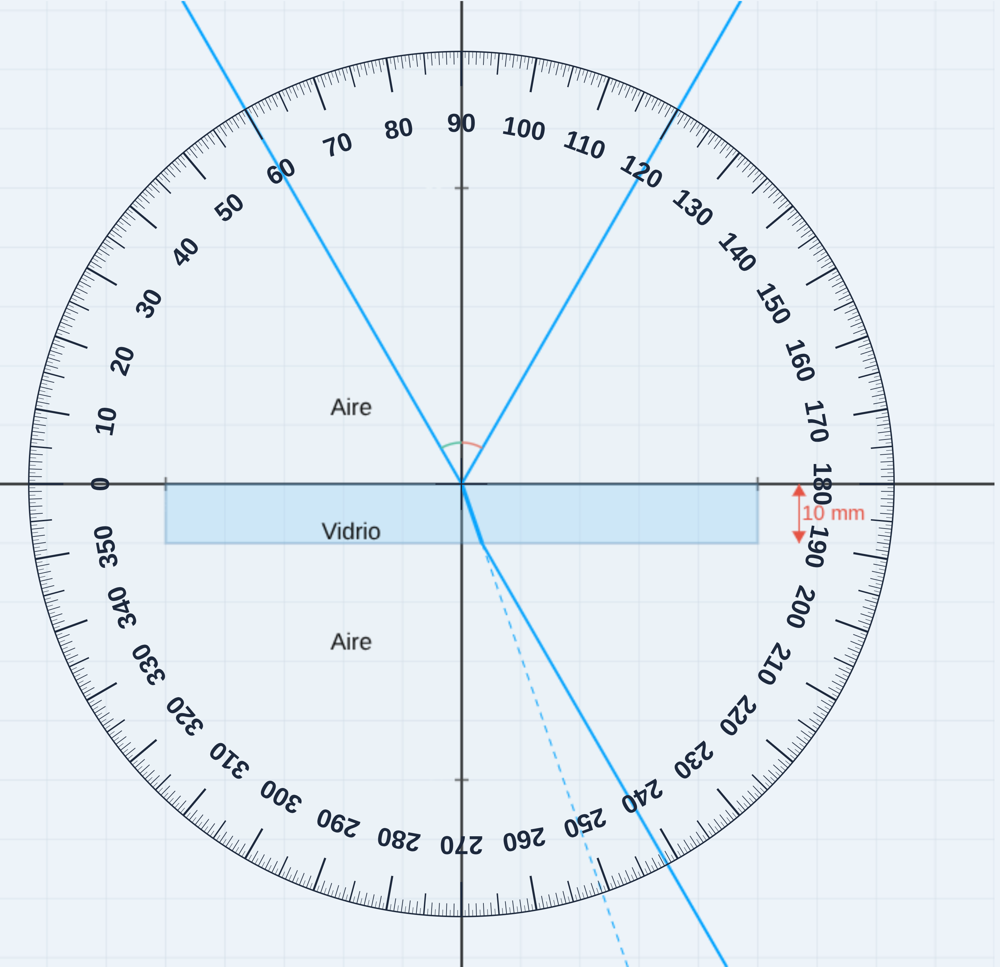
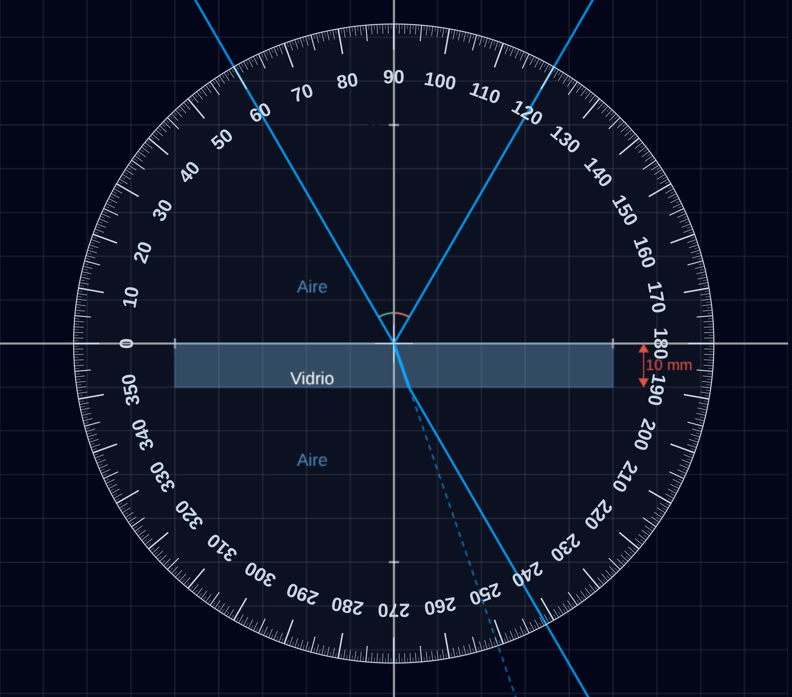
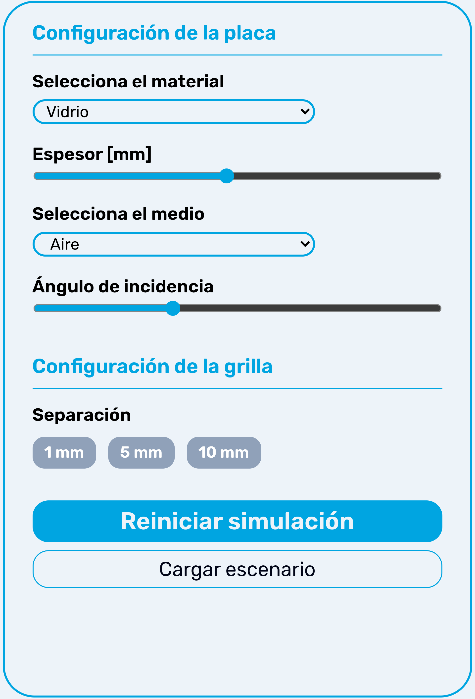
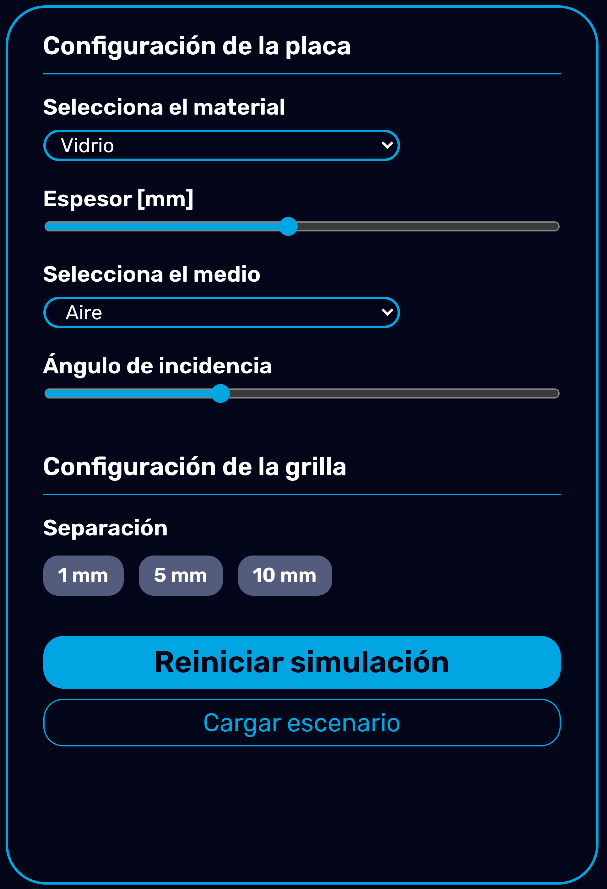

Trabajo práctico n° 1
Objetivo general
Determinar experimentalmente el comportamiento de un rayo de luz al incidir sobre una placa de material transparente, modelando el sistema mediante la Ley de Snell, y obtener los índices de refracción relativo y absoluto de los medios intervinientes a partir de mediciones angulares en un simulador virtual, contrastando los resultados con valores de referencia.
Marco teórico
Alcance y limitaciones de la óptica geométrica
La óptica geométrica describe la propagación de la luz en términos de rayos que se desplazan en línea recta, siendo válida cuando las dimensiones características del sistema son mucho mayores que la longitud de onda de la luz. Este modelo permite analizar fenómenos como la reflexión y la refracción mediante relaciones geométricas simples. Sin embargo, no contempla efectos ondulatorios como la interferencia o la difracción, ni la dependencia con la longitud de onda.
Ley de Refracción (Ley de Snell)
Cuando un rayo de luz atraviesa la interfaz entre dos medios transparentes con distintos índices de refracción, su dirección de propagación cambia según:
donde:
- $n_1$, $n_2$: índices de refracción de los medios
- $\theta_1$: ángulo de incidencia (respecto a la normal)
- $\theta_2$: ángulo de refracción
Esta expresión permite determinar el índice de refrac- ción de un material desconocido a partir de mediciones angulares.
Ley de Reflexión
Cuando un rayo incide sobre una superficie, parte de la energía se refleja cumpliendo:
donde:
- $\theta_i$: ángulo de incidencia con respecto a la normal
- $\theta_r$: ángulo de reflexión con respecto a la normal
Reflexión total interna
Cuando la luz se propaga desde un medio de mayor índice de refracción hacia uno de menor índice, existe un ángulo límite denominado ángulo crítico, para el cual el rayo refractado se propaga tangencialmente a la interfaz. Para ángulos de incidencia mayores que este valor, no existe refracción y toda la energía se refleja dentro del medio. Este fenómeno se conoce como reflexión total interna.
Uso del simulador
Zona de medición
Es la representación gráfica del sistema óptico y el fenómeno. Permite realizar observaciones y mediciones empleando el transportador o la grilla.


Figura 1: Zona de medición del simulador


Figura 2: Configuración del experimento
Consideraciones metrológicas
El simulador permite incorporar errores aleatorios en las mediciones, con el objetivo de reproducir condicio- nes experimentales reales. Las principales fuentes de variabilidad en este tipo de mediciones son:
- Resolución del instrumento (transportador)
- Alineación del rayo incidente
- Precisión en la lectura angular
- Aproximaciones del modelo geométrico
Se recomienda realizar múltiples mediciones para reducir la influencia de errores aleatorios y evaluar la dispersión de los resultados con el fin de:
- Reducir la influencia de errores aleatorios
- Mejorar la representatividad del valor obtenido
- Evaluar la dispersión de los resultados
Desarrollo
Modelo del sistema físico
Se considera la incidencia de un rayo de luz desde un medio transparente sobre una placa plana de otro material, produciéndose fenómenos de reflexión y refracción en las interfaces.
El análisis del sistema se realizará bajo las siguientes hipótesis:
- Los medios son homogéneos e isotrópicos
- La luz se propaga según el modelo de óptica geométrica
- Las superficies de la placa son planas y paralelas
- No se consideran efectos de dispersión ni absorción
El comportamiento del rayo en cada interfaz se modela mediante la Ley de Snell
Experimento 1: Índice de Refracción Relativo
Objetivo
Determinar el índice de refracción relativo entre el medio exterior y el material de la placa a partir de mediciones angulares.
Procedimiento
- Seleccionar un medio exterior conocido y el material de la placa
- Definir un espesor de placa adecuado (no crítico para este experimento).
- Ajustar el ángulo de incidencia $\theta_1$
- Medir el ángulo de refracción $\theta_2$ en el interior de la placa
- Registrar los valores medidos en la tabla
- Repetir para distintos ángulos de incidencia
- Incorporar múltiples mediciones por condición
- Calcular el índice relativo
Expresión de resultados
Los estudiantes deberán:
- Determinar el índice de refracción relativo para distintas condiciones
- Analizar la constancia del valor obtenido
Experimento 2: Índice de Refracción Absoluto
El valor obtenido en el Experimento 1 corresponde a un índice relativo entre medios, por lo que no puede contrastarse directamente con valores tabulados, los cuales se expresan respecto al vacío. Para obtener valores contrastables, es necesario obtener los índices de refracción absolutos de cada uno de los medios ópticos intervinientes.
Objetivo
Determinar el índice de refracción absoluto del material de la placa y del medio exterior, utilizando una estrategia experimental escalonada, y contrastar los valores obtenidos experimentalmente con valores de fuentes confiables.
Parte A: Índice absoluto de la placa
Usando el vacío como referencia ($n_{vacío} = 1{,}00$) se procederá de la siguiente forma:
- Configurar el medio exterior como vacío
- Seleccionar el material de la placa
- Medir $\theta_1$ (en vacío) y $\theta_2$ (en la placa)
- Calcular el índice de refracción absoluto de la placa $n_{placa}$
- Repetir para distintos ángulos y calcular un valor promedio.
Parte B: Índice del medio exterior
Una vez conocido el índice absoluto de la placa, se puede utilizar como referencia para determinar el índice del medio exterior desconocido.
- Configurar el medio exterior desconocido
- Mantener el mismo material de la placa
- Medir $\theta_1$ (ángulo en el medio exterior) y $\theta_2$ (ángulo en la placa)
- Aplicar la Ley de Snell y obtener el $n_{medio}$
- Repetir mediciones y calcular un valor promedio
Expresión de resultados
Los estudiantes deberán:
- Obtener el índice absoluto de la placa
- Determinar el índice del medio exterior
- Comparar los valores obtenidos con valores publicados en fuentes confiables
Actividades complementarias
Nociones metrológicas
Detectar los posibles orígenes de la incertidumbre en los resultados obtenidos. Analizar a dispersión de error.
Nociones experimentales
Para la determinación del índice de refracción absoluto, es necesario emplear vacío como medio exterior. Describir experimentalmente cómo puede lograrse esa condición particular en un laboratorio real.
Estructura del informe
Los informes elaborados deberán considerar
- Descripciones de las experiencias realizadas en el laboratorio con sus explicaciones correspondientes.
- Desarrollo de los modelos de cálculo partiendo de leyes y conceptos fundamentales
- Resultados numéricos relevados presentados en forma de tablas y gráficas
- Comparación de los resultados obtenidos y discusión sobre su exactitud
- Conclusiones (totales o parciales de cada actividad)
- Uso de los formatos de presentación solicitados por el docente
- Bibliografía y referencias de las fuentes consultadas
- Las condiciones particulares solicitadas por el docente
Bibliografía
- D. Halliday y R. Resnick, FÍSICA PARA ESTUDIANTES DE CIENCIAS E INGENIERÍA Parte I, 5ª ed. Ciudad de México, México: Compañía Editorial Continental, 1964.
- D. Halliday y R. Resnick, FÍSICA. Parte I, 3ª ed. Ciudad de México, México: Compañía Editorial Continental, 1982
- R. A. Serway, FÍSICA. Tomo I, 4ª ed. McGraw Hill
- R. A. Serway, FÍSICA. Tomo II, 4ª ed. McGraw Hill
- D. Tipler, FÍSICA. Tomo II. Reverté
- J. E. Fernández y E. E. Galloni, TRABAJOS PRACTICOS DE FÍSICA. Nigar SRL, 1968.